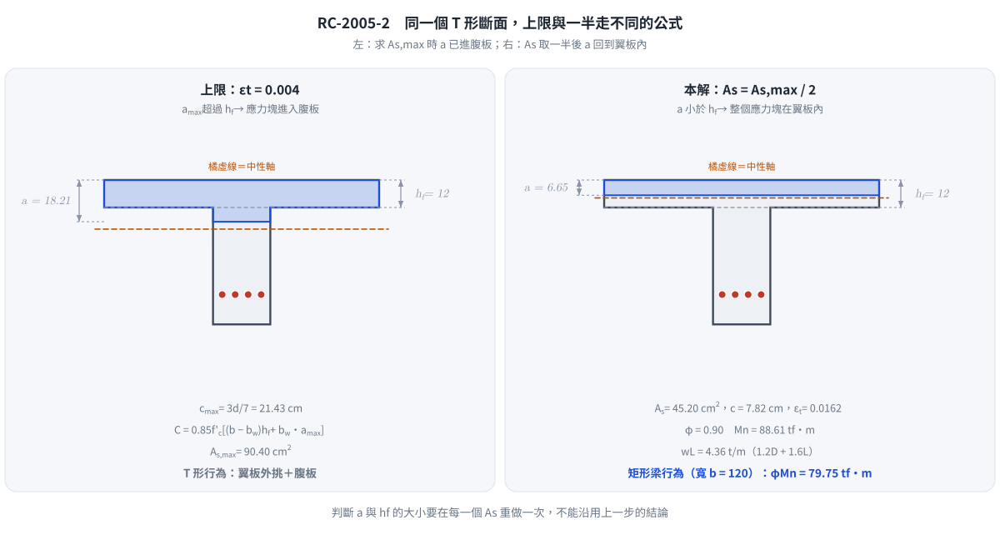

📄 題目正本：考卷原文・附圖・判讀清單（已確認）
RC-2005-2 題目正本
本檔只記錄考卷上寫了什麼、圖上畫了什麼，不含任何解法。解析見同資料夾
RC-2005-2.md。
判讀清單已經使用者確認（凍結）；本檔原則上不再修改（改動須回考卷原圖並記 log）。
| 項目 | 內容 |
|---|---|
| 考卷 | raw/exams/RC-2005_鋼筋混凝土設計與預力.pdf 第 1 頁（全一頁），第二題 |
| 考年 | 民國 94 年（2005） |
| 配分 | 20 分 |
| 附圖 | 無 |
| 判讀狀態 | 已確認（2026-11-12 使用者確認；影響答案項目 #3 使用者選 εt ≥ 0.004 上限＋1.2D + 1.6L；轉錄 2026-11-12，PyMuPDF 110 dpi 全頁目視＋抽出文字核對；盲讀後才比對既有解析） |
1. 考卷原文（逐字）
二、一簡支 T 型鋼筋混凝土梁，斷面尺寸為 b=120 cm，$b_w$=25 cm，$h_f$=12 cm，h=63 cm，d=50 cm，混凝土 $f'_c$=280 kgf/cm²，鋼筋降伏強度 $f_y$=4200 kgf/cm²。試使用 ACI 規範允許之最大拉力筋量的一半，計算此梁之設計彎矩。若梁之簡支跨距為 9m，並承受靜載重（含自重）為 0.75 t/m，則可承受之最大容許活載重為何？（20 分）
2. 考卷給的公式、附表與參數
- 題文數值：$b=120$、$b_w=25$、$h_f=12$、$h=63$、$d=50$ cm；$f'_c=280$、$f_y=4200$ kgf/cm²；簡支跨距 9 m；靜載重（含自重）0.75 t/m。
- 沒有給：所依 ACI 規範版本（「最大拉力筋量」在舊版為 $0.75\rho_b$、在 ACI 318-02 以後為淨拉應變下限）、載重因數、強度折減係數 $\phi$、$\beta_1$、$E_s$、斷面圖。
- 卷首注意事項：㈠不必抄題；㈡可以使用電子計算器，但需詳列解答過程。
3. 附圖
本題無附圖。
4. 判讀清單
「把握」標不確定者請優先確認；解讀類項目（題目用字的意思）另標「解讀」。
| # | 項目 | 判讀 | 圖上／題文依據 | 把握 |
|---|---|---|---|---|
| 1 | 斷面 | T 形，有效翼寬 $b=120$ cm（題目直接給，不需再算有效翼寬）、腹寬 25 cm、翼厚 12 cm、全高 63 cm、$d=50$ cm | 題文 | 確定 |
| 2 | 支承 | 簡支，跨距 9 m | 題文 | 確定 |
| 3 | 鋼筋量 | $A_s$＝「ACI 規範允許之最大拉力筋量」的一半；最大量的定義依所採 ACI 版本而異（$0.75\rho_b$ 或 $\varepsilon_t$ 下限 0.004），兩者給的 $A_s$ 不同 | 題文未指明版本；民國 94 年國內規範仍以 $0.75\rho_b$ 為主流寫法 | 確定（使用者選擇：採 εt ≥ 0.004 上限，並配 1.2D + 1.6L） |
| 4 | 「設計彎矩」 | 斷面設計強度 $\phi M_n$ | 題文 | 確定（解讀） |
| 5 | 「最大容許活載重」 | 以 $\phi M_n \ge M_u$ 反求的工作（未乘因數）活載重均佈值 $w_L$（t/m） | 題文「容許活載重」；靜載重 0.75 t/m 為工作載重 | 確定（解讀） |
| 6 | 靜載重 | 0.75 t/m 已含自重，不再另加 | 題文「（含自重）」 | 確定 |
| 7 | 考卷沒有給 | 載重因數、$\phi$、$\beta_1$、$E_s$，須考生依規範假設 | 全題 | 確定 |
轉錄：2026-11-12（RC-U1-1 題目正本推廣・批 1）
確認：2026-11-12 使用者確認（RC-U1-1 題目正本推廣・批 1，關卡一）
考題編號：RC-2005-2
主分類： RC-U1-1 RC 梁彎矩強度分析與設計
副分類： 無
設計法： USD 強度設計法
標籤： T形梁 最大拉力筋量 0.75ρb T型梁平衡鋼筋 NA在翼板 活載重反推 設計彎矩 ACI載重組合 εt=0.004上限 1.2D+1.6L
1. 題目（考卷原文見題目正本）
考卷原文、公式／附表與判讀清單（已確認）見
RC-2005-2-problem.md。本節只列解題時最容易讀錯的地方與本解使用的記號；題意以題目正本為準。
常見誤讀
| 項目 | 正確判讀 | 常見誤讀 |
|---|---|---|
| 「ACI 規範允許之最大拉力筋量」 | 考卷沒寫版本；本解採 ACI 318-02 起的淨拉應變上限：最外層拉力筋 $\varepsilon_t \ge 0.004$ 時的 $A_s$（使用者確認，判讀 #3） | 一律用舊版 $0.75A_{sb}$（本解 2026-11-12 前即如此，$w_L = 3.28$ t/m）；兩者給的 $A_{s,\max}$ 不同 |
| 載重組合 | $1.2D + 1.6L$，與 $\varepsilon_t$ 體系同一版規範成套 | 混用 $\varepsilon_t$ 上限與舊版 $1.4D + 1.7L$ |
| $b = 120$ cm | 題目直接給的有效翼寬，不必再算 | 再依跨距、梁距重算有效翼寬 |
| 靜載重 0.75 t/m | 已含自重，不再另加 | 另加腹板自重 |
| 所求 | ㈠ 設計彎矩 $\phi M_n$；㈡ 工作（未乘因數）活載重 $w_L$ | 把 $W_u$ 當成答案 |
本解記號： $b=120$、$b_w=25$、$h_f=12$、$d=50$ cm；$A_{s,\max}$＝$\varepsilon_t = 0.004$ 時的拉力筋量；$A_s = A_{s,\max}/2$；$w_D=0.75$ t/m、$w_L$＝活載重（工作載重）；$W_u$＝因數化均佈載重。
2. 考題核心精神與出題者意圖 (Core Concepts & Examiner's Intent)
核心觀念： T 型梁「最大拉力筋量」的正確計算，以及 USD 反推活載重。
測驗重點：
- 最大拉力筋量：取最外層拉力筋 $\varepsilon_t = 0.004$ 時的中性軸 $c = \tfrac{3}{7}d$，此時應力塊深 $a > h_f$，壓力須計入翼板外挑 + 腹板
- 確認使用 $A_s = A_{s,\max}/2$ 後，中性軸深度是否仍在翼板內（若在翼板，可簡化為矩形梁計算）
- 知道「設計彎矩」= $\phi M_n$，並由 $\varepsilon_t$ 確認 $\phi = 0.9$（拉力控制）
- 利用 $\phi M_n = M_u = W_u L^2/8$ 反推因數化載重，再以 $1.2D + 1.6L$ 求 $w_L$
典型陷阱：
- 誤用矩形梁（寬 $b_w$）求上限而忽略翼板壓力貢獻 → 低估 $A_{s,\max}$
- 計算完 $A_{s,\max}/2$ 後，未檢核 NA 是否在翼板內，就套用 T 形梁公式
- 規範體系混用：$\varepsilon_t$ 上限配舊版 $1.4D + 1.7L$
3. 解題戰略地圖與陷阱分析 (Strategic Roadmap & Trap Analysis)
作戰計畫：
- 由 $\varepsilon_t = 0.004$ 求上限中性軸 $c_{\max} = \tfrac{0.003}{0.003+0.004}d$ 與 $a_{\max} = \beta_1 c_{\max}$，判斷在翼板或腹板
- 依 NA 位置計算 T 型梁壓力 → 求 $A_{s,\max}$
- 使用 $A_s = A_{s,\max}/2$
- 確認 NA 位置（用 $A_s$ 計算的 $a$ 是否 $\le h_f$）
- 若 NA 在翼板 → 矩形梁公式求 $\phi M_n$
- 設 $\phi M_n = W_u L^2/8$，以 $W_u = 1.2w_D + 1.6w_L$ 反推 $w_L$
關鍵陷阱（3 個）：
- ⚠ 上限狀態 NA 在腹板中：$a_{\max} = 18.21\ \text{cm} > h_f = 12\ \text{cm}$，翼板伸出部分 + 腹板均受壓，$A_{s,\max}$ 遠大於腹板矩形梁的上限
- ⚠ 用 $A_s/2$ 後 NA 反而跑回翼板內：$A_s = 45.20\ \text{cm}^2$ 時，$a = 6.65\ \text{cm} < 12\ \text{cm}$，此時設計方法退化為矩形梁（寬度 $b = 120\ \text{cm}$），不需用 T 形梁公式
- ⚠ $\phi$ 值驗核：$\varepsilon_t = 0.0162 \gg 0.005$，確認拉力控制 $\phi = 0.9$ ✓
3.5 變數層次分析 (Variable Hierarchy Analysis)
複習提示：第一次解題後，在每個卡住的知識點旁標記
⚠；第二次複習時只看有⚠的項目。
最終目標
（一）求 $\phi M_n$（設計彎矩，使用 $A_{s,\max}/2$）；（二）求最大容許活載重 $w_L$（t/m）。
本題關鍵公式（依計算順序）
$$\text{Step 1: } c_{\max} = \frac{0.003}{0.003+0.004}\,d,\quad a_{\max} = \beta_1 \cdot c_{\max}$$
$$\text{Step 2: } C_{\max} = 0.85f'_c \cdot (b-b_w) \cdot h_f + 0.85f'_c \cdot b_w \cdot \boxed{a_{\max}}$$
$$\text{Step 3: } A_{s,\max} = \frac{\boxed{C_{\max}}}{f_y};\quad A_s = \frac{A_{s,\max}}{2}$$
$$\text{Step 4: } a = \frac{\boxed{A_s} \cdot f_y}{0.85f'_c \cdot b} \quad \text{（驗核：} a \le h_f \text{ → 矩形梁）}$$
$$\text{Step 5: } \phi M_n = \phi \cdot \boxed{A_s} \cdot f_y \cdot \left(d - \frac{\boxed{a}}{2}\right)$$
$$\text{Step 6: } W_u = \frac{8\,\phi M_n}{L^2};\quad w_L = \frac{W_u - 1.2\,w_D}{1.6}$$
L1：題目直接給定
| 符號 | 數值 | 說明 |
|---|---|---|
| $b$ | $120\ \text{cm}$ | 有效翼板寬 |
| $b_w$ | $25\ \text{cm}$ | 腹板寬 |
| $h_f$ | $12\ \text{cm}$ | 翼板厚 |
| $d$ | $50\ \text{cm}$ | 有效深度 |
| $f'_c$ | $280\ \text{kgf/cm}^2$ | |
| $f_y$ | $4200\ \text{kgf/cm}^2$ | |
| $L$ | $9\ \text{m}$ | 簡支跨距 |
| $w_D$ | $0.75\ \text{t/m}$ | 靜載重（含自重） |
L2：需知識點推導
最大拉力筋量（$\varepsilon_t = 0.004$）
| 符號 | 公式／來源 | 卡關? |
|---|---|---|
| $\beta_1$ | $0.85$（$f'_c \le 280$） | |
| $c_{\max}$ | $\tfrac{3}{7} \times 50 = 21.43\ \text{cm}$ | |
| $a_{\max}$ | $0.85 \times 21.43 = 18.21\ \text{cm}$（在腹板） | |
| $C_{\max}$ | 翼板外挑 + 腹板壓力之和 = $379{,}695\ \text{kgf}$ | |
| $A_{s,\max}$ | $C_{\max}/f_y = 90.40\ \text{cm}^2$ |
鋼筋用量與 NA 位置
| 符號 | 公式／來源 | 卡關? |
|---|---|---|
| $A_s$ | $90.40/2 = 45.20\ \text{cm}^2$ | |
| $a$ | $45.20 \times 4200/28{,}560 = 6.65\ \text{cm} < h_f$（矩形梁！） |
設計彎矩與活載重
| 符號 | 公式／來源 | 卡關? |
|---|---|---|
| $\varepsilon_t$ | $0.003(d-c)/c$；$c = 7.82\ \text{cm}$ → $\varepsilon_t = 0.0162 \gg 0.005$ → $\phi=0.9$ | |
| $\phi M_n$ | $0.9 \times A_s \times f_y \times (d-a/2)$ | |
| $W_u$ | $8\phi M_n/L^2$ | |
| $w_L$ | $(W_u - 1.2 w_D)/1.6$ |
L3：深層知識（不懂就卡住）
| 知識點 | 說明 | 卡關? |
|---|---|---|
| 最大拉力筋量的兩個時代 | 舊版（ACI 318-99 以前）：$A_s \le 0.75A_{sb}$；ACI 318-02 起：最外層拉力筋 $\varepsilon_t \ge 0.004$，對應 $c \le \tfrac{3}{7}d$ | |
| 上限狀態 NA 在翼板或腹板 | 先算 $a_{\max}$，與 $h_f$ 比較，本題 $18.21 > 12$ → 腹板中，壓力需分開計算翼板 + 腹板 | |
| 使用部分鋼筋後 NA 位置可能改變 | $A_s = 45.20\ \text{cm}^2$ 比上限小很多，此時 $a = 6.65 < h_f$ → NA 回到翼板內，退化為矩形梁 | |
| 載重組合與規範版本成套 | $\varepsilon_t$ 體系（ACI 318-02 起）的強度載重組合為 $U = 1.2D + 1.6L$ |
4. 步驟化詳細計算過程 (Step-by-Step Detailed Calculation)
① 最大拉力筋量對應的中性軸
最外層拉力筋 $\varepsilon_t = 0.004$、混凝土 $\varepsilon_{cu} = 0.003$：
$$c_{\max} = \frac{0.003}{0.003 + 0.004}\,d = \frac{3}{7} \times 50 = 21.43\ \text{cm}$$
$$a_{\max} = \beta_1 \cdot c_{\max} = 0.85 \times 21.43 = \boxed{18.21\ \text{cm}}$$
判斷： $a_{\max} = 18.21\ \text{cm} > h_f = 12\ \text{cm}$，上限狀態的中性軸在腹板中 → 需計算 T 型斷面完整壓力
② 計算上限壓力 $C_{\max}$ 與 $A_{s,\max}$
$$C_f = 0.85 f'_c (b - b_w) h_f = 0.85 \times 280 \times (120-25) \times 12 = 238 \times 1{,}140 = 271{,}320\ \text{kgf}$$
$$C_w = 0.85 f'_c \cdot b_w \cdot a_{\max} = 238 \times 25 \times 18.214 = 108{,}375\ \text{kgf}$$
$$C_{\max} = 271{,}320 + 108{,}375 = 379{,}695\ \text{kgf}$$
$$A_{s,\max} = \frac{C_{\max}}{f_y} = \frac{379{,}695}{4{,}200} = \boxed{90.40\ \text{cm}^2}$$
③ 使用量
$$A_s = \frac{A_{s,\max}}{2} = \frac{90.40}{2} = \boxed{45.20\ \text{cm}^2}$$
④ 驗核 NA 位置（確認矩形梁模式）
假設 NA 在翼板（$a \le h_f$）：
$$a = \frac{A_s f_y}{0.85 f'_c \cdot b} = \frac{45.20 \times 4{,}200}{0.85 \times 280 \times 120} = \frac{189{,}840}{28{,}560} = \boxed{6.65\ \text{cm}}$$
驗核： $a = 6.65\ \text{cm} < h_f = 12\ \text{cm}$ ✓
→ NA 在翼板內，等效為矩形梁（$b = 120\ \text{cm}$）
⑤ 確認 $\phi$ 值
$$c = \frac{a}{\beta_1} = \frac{6.65}{0.85} = 7.82\ \text{cm}$$
$$\varepsilon_t = 0.003 \times \frac{d - c}{c} = 0.003 \times \frac{50 - 7.82}{7.82} = 0.003 \times 5.39 = 0.0162 \gg 0.005$$

圖 1 上限與一半的應力塊深度一個在腹板、一個在翼板內，所以兩步要用不同的公式。這張圖攔下兩個錯：求 $A_{s,\max}$ 時直接用翼板寬的矩形應力塊，以及鋼筋取一半後仍沿用翼板＋腹板分解。
拉力控制斷面，$\phi = 0.9$ ✓
⑥ 設計彎矩 $\phi M_n$
$$M_n = A_s f_y \left(d - \frac{a}{2}\right) = 45.20 \times 4{,}200 \times \left(50 - \frac{6.65}{2}\right)$$
$$= 189{,}840 \times 46.675 = 8{,}860{,}782\ \text{kgf·cm} = 88.61\ \text{tf·m}$$
$$\phi M_n = 0.9 \times 88.61 = \boxed{79.75\ \text{tf·m}}$$
⑦ 最大容許活載重
簡支梁跨中最大彎矩：
$$M_u = \frac{W_u L^2}{8} = \phi M_n \Rightarrow W_u = \frac{8\,\phi M_n}{L^2}$$
$$W_u = \frac{8 \times 79.75}{9^2} = \frac{638.0}{81} = 7.88\ \text{t/m}$$
USD 載重組合（$U = 1.2D + 1.6L$）：
$$W_u = 1.2\,w_D + 1.6\,w_L$$
$$7.88 = 1.2 \times 0.75 + 1.6\,w_L = 0.90 + 1.6\,w_L$$
$$w_L = \frac{7.88 - 0.90}{1.6} = \frac{6.98}{1.6} = \boxed{w_{L,\max} \approx 4.36\ \text{t/m}}$$
5. 關鍵爭議點與進階探討 (Critical Issues & Advanced Discussion)
① 「ACI 規範允許之最大拉力筋量」是哪一版？
考卷（民國 94 年）沒有指明版本，本解採 ACI 318-02 起的淨拉應變上限 $\varepsilon_t \ge 0.004$，並配同一版的 $1.2D + 1.6L$（使用者 2026-11-12 確認）。三種讀法對照：
| 讀法 | $A_{s,\max}$ | $A_s$ | $\phi M_n$ | $w_L$ |
|---|---|---|---|---|
| 本解：$\varepsilon_t = 0.004$，$1.2D+1.6L$ | 90.40 cm² | 45.20 cm² | 79.75 tf·m | 4.36 t/m |
| 舊版：$0.75A_{sb}$（全 T 平衡法，$A_{sb} = 100.3$ cm²），$1.4D+1.7L$ | 75.23 cm² | 37.61 cm² | 67.16 tf·m | 3.28 t/m |
| $\varepsilon_t = 0.004$ 但配 $1.4D+1.7L$（體系混用） | 90.40 cm² | 45.20 cm² | 79.75 tf·m | 4.02 t/m |
考場上應寫明採用的規範版本，答案依版本而異。舊版的 $0.75A_{sb}$ 另有「分拆法」（$A_{sf} + 0.75\rho_b^\text{rect} b_w d$），不同教科書寫法不一，同一題內不可混用。
② 令人驚訝的「退化」現象
上限狀態 NA 在腹板（$a_{\max} = 18.21\ \text{cm}$），加上翼板貢獻後 $A_{s,\max} = 90.40\ \text{cm}^2$，遠大於只用腹板寬算的上限（$238 \times 25 \times 18.21 / 4200 = 25.8\ \text{cm}^2$）。但取 $A_{s,\max}/2 = 45.20\ \text{cm}^2$ 後，$a$ 縮短至 6.65 cm，NA 重新落入翼板，此時 T 形梁完全以矩形梁行為運作。這說明「大翼板 T 型梁」在使用遠低於最大鋼筋量時，翼板幾乎總是未被充分利用。
③ 實際配筋數量估算
$A_s = 45.20\ \text{cm}^2$，若選用 #8 筋（$A_s = 5.07\ \text{cm}^2$/根）：
需根數 = $45.20/5.07 = 8.9$ → 選 9 根 #8（$A_s = 45.6\ \text{cm}^2$）
若選用 #9 筋（$A_s = 6.47\ \text{cm}^2$/根）：
需根數 = $45.20/6.47 = 7.0$ → 選 7 根 #9（$A_s = 45.3\ \text{cm}^2$）
腹板寬僅 25 cm，這麼多根必須分 2～3 排配置，排數增加會使實際 $d$ 減小，需回頭驗核。
修正日期：2026-11-12（§1 改為指向題目正本）
修正日期：2026-11-12（勘誤：題意判讀，「ACI 規範允許之最大拉力筋量」改採 εt ≥ 0.004 上限並配 1.2D + 1.6L（使用者確認；舊解 0.75Asb ＋ 1.4D + 1.7L）；As,max 75.2 → 90.40 cm²，φMn 67.1 → 79.75 tf·m，wL 3.28 → 4.36 t/m；§2、§3、§3.5、§4、§5 改寫，舊解數值保留在 §5① 對照表；驗證：Python 獨立重算 MISMATCHES: 0）
圖解補繪：2026-11-13（圖 1 T 形斷面上限與一半的應力塊對照；向量圖，腳本 gen_RC-2005-2.py，可重跑，檔尾對 §4 公佈值 assert；非勘誤）